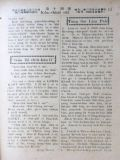

Languages
台文
｜
中文
｜
日本語
｜
English
字體
小
｜
中
｜
大
首頁
/
白話字數位典藏
白話字數位典藏全文檢索
查詢模式
選擇年代
清國時代(1885-1895)
日本時代(1895-1945)
戰後(1945-1969)
1885-1895
1896-1905
1906-1915
1916-1925
1926-1935
1936-1945
1946-1955
1956-1965
1966-1969
1970-1980
1980-1990
1990-2000
2000-2010
2010-
選擇文類
詩
散文
小說
戲劇
傳記
選擇作者
陳清忠
陳清義
編輯部
柯設偕
吳天命
明有德
偕叡廉
周天來
劉華義
王守勇
林茂生
陳添旺
柯維思
王占魁
賴仁聲
陳瓊琚
雪峰逸嵐
吳清鎰
郭水龍
蕭樂善
許水露
葉金木
陳金然
章王由
廖得
鄭連坤
潘道榮
楊士養
梁秀德
劉約翰
周淑慧
高金聲
林燕臣
黃六點
蔡愛義
許有才
主筆
巴克禮
陳鳩水
郭朝成
張基全
陳明清
陳能通
拾穗生
顏振聲
卓恆利
傳道局
胡文池
劉主安
鄭兒玉
中學校
神學校
Google Search
Yahoo Search
全部
刊名
標題
標題(教羅)
全文
全文(教羅)
作者
第8頁，共41頁(共813筆資料) 0.62573289871216sec
1
...
6
7
8
9
10
...
41
To Page
GO
文字列表
圖文列表
排序
日期
文類
刊名
作者
影像
[1927-3 芥菜子 文類-散文 作者-陳清忠/Tân Chheng-tiong ]
(3)
內面的生活 [ Lāi-bīn ê Seng-oa̍h ]
內面的生活 「上帝的國是佇恁的中間」。主有按呢講，獻你的全心予主，放sak這个罪惡的世間，就你的靈魂欲得著平安。 著學看輕外界的事物，也留心佇內界的事情，就恁會得曉悟上帝的國臨到佇恁(的中間)。 「因為上帝的國是和平，是對聖神來歡喜」。無清氣的人袂得通享受。 你若是備辦tú好的王位佇你的心內，基督就欲來揣你。也欲將伊的慰安賞賜--你。 所有伊的媠佮榮光攏是對心內發出，佇遐伊teh欲歡喜快樂。 靈tek 的人基督常常來訪問；若來逐擺有帶歡喜的話，快樂的慰安，滿滿的平和，尚且帶真通驚惶的友情來。 Ah篤信的靈魂，ah著備辦你的心肝來予這个新囝婿，伊穩當欲來揣--你，欲來踮佇你的內面...
[1927-3 芥菜子 文類-散文 作者-陳瓊琚/Tân Khêng-ku]
(6)
論孝行 [ Lūn Hàu-hēng ]
論孝行 古早的聖賢有教示講，「百善孝為先」，實在做人若袂曉有孝佮尊重序大人就通講無有做人的資格。家己的序大人尚且袂曉有孝，欲thài會做社會有德行的人ah？閣再做爸母的人gâu疼家己的囝兒，這是自然的天性。今論序細著會曉孝順序大，佮序大著疼序細，這兩項攏是自然的的天性。毋kú咱常常捌聽著彼款毋若無順趁序大人，反轉佮序大人無同心的囝兒，其中濟濟kiám-chhái是對佇無好的教示佮受著歹環境的影響，總是中間也有為著序大人有缺點的所在，致到予序細袂尊敬--in。因為老爸若毋成老爸，自然囝就毋成囝。頂面若不正，下面自然歪chhoa̍h。總是論序大人疼囝兒有兩款，就是真的疼佮假的疼，所以囝兒的孝順...
[1927-3 芥菜子 文類-散文 作者-明有德/Bêng Iú-tek]
(1)
我來就近你 [ Goá lâi chiū-kūn lí ]
我來就近你 「救主歡喜的聲，我著近前來聽：你予我累致到流血，救我罪人性命。」 這首的作者是 LEWIS HART SUTH。伊23 歲的時有做美國美以美會的牧師。做牧師的時伊猶原做音樂月報的記者。若看這首的詩，是ná親像聽音樂的話：－ 「救主歡喜的聲」...... 「救主疼痛聲音」...... 毋但按呢，這首有真深的道理佇teh。 美國出名的演說家 SANKY有一擺佇英國傳道理的時，按呢講：－ 「這首詩的話佮調是代先發行佇月報。彼个題目是「Chhoā人到成聖」我佇英國的時，寄一本予我，也我隨時共伊採用，這本真誠有力，通幫贊我chhoā人歸基督」。 明有德。...

[1927-3 芥菜子 文類-散文 作者-偕叡廉/Kai Jōe-liâm]
(3)
東西南北 [ Tang Sai Lâm Pak ]
東西南北 1、南美洲有8000萬人，內中一半較加毋捌字。In是天主教較濟。現時基督教有2000 个宣教師佇遐teh報揚主的福音。 2、通世界回回教的人數有兩億四千萬，較濟是佇印度國、阿非加、南洋、佮中國。佇遮濟人的中間只有24，0000人捌字nā-tiāⁿ。佇100 个中間只有五个人會曉讀。 3、回回教講世界自古以來才有五个先知。佇這五个中間只有耶穌基督無罪。伊一个有成聖。所以現時佇印度有濟濟青年心向佇主的教示。 4、美國北部長老教會舊年有募集 2400 萬銀。本國宣道會 800 萬，外邦宣道會 600 萬，教育部260 萬，ko͘-koáⁿ-hoē 180 萬，本國女宣道會 260 ...
[1927-3 芥菜子 文類-散文 作者-柯設偕/Koa Siat-kai]
(2)
台灣的名稱 [ Tâi-oân ê Bêng-cheng ]
台灣的名稱 咱本島，對古早以來，有濟濟的名稱，就是有真濟款的名。今這tia̍p愛寫遐个名，佮in 的由來，予大家做參考。 「台灣。」 早前，踮佇安平地方的熟番有號in彼地方，叫做「Thaⁿ-ian」，抑是「Thai-ian。」也後來支那人有將彼个名寫漢字，就是譯做現時這2字漢字，號做「台灣。」總是早前是kan-ta 指起安平的地方 nā-tiāⁿ，毋kú後來有將這个名－台灣做全島的名。咱今仔日所講，這个台灣就是對按呢來號的。也現時這个台灣的名是做本島的代表的的名。漢字就是臺灣，國語講，タイワソ英語講TAIWAN，這是咱逐人所知影。 「Takasago」－ 「Ko-sa」現時的...
[1927-3 芥菜子 文類-散文 作者-柯設偕/Koa Siat-kai]
(2)
台灣的生番 [ Tâi-oân ê chhiⁿ-hoan ]
台灣的生番 台灣的生番，毋是tú-tú siāng一款，有幾若款，幾若種族。 今將遮个生番族的名寫佇下底。 1. 泰雅 北部番 2. 賽夏 3. 布農 南部番 4. 鄒 5. 排灣 6. <...
[1927-3 芥菜子 文類-選擇文類 作者--/-]
(1)
個人的消息 [ Kò-jîn ê Siau-sit ]
個人的消息 1、 劉中堅宣教師離開北部轉籍去南部。 2、 偕叡廉宣教師任北部傳道局的理事長。 3、 吳花蜜女醫生，3月11日離開台灣轉去加拿大。 4、 戴仁壽博士去南洋視察thái-ko 的事，3月7日轉來。 5、高華德宣教師teh準備欲轉籍去名古屋。 6、 陳清義牧師兼任雙連同會的議長。 7、 郭希信牧師兼任三角埔同會的議長。 8、 鍾天枝牧師兼任月眉，苗栗 2 同會的議長。 9、 郭水龍牧師兼任花蓮港、觀音山、公埔 3同會的議長。 10、徐春生牧師兼任墩仔跤同會的議長。 11、 蕭安居牧師兼任桃園同會的議長。 12、葉金木牧師兼任Sin-tiok 同...
[1927-3 芥菜子 文類-選擇文類 作者-傳道局/Thoân-tō-kio̍k]
(3)
教會的消息 [ Kàu-hoē ê siau-sit ]
教會的消息 1、錫口教會： 陳復禮、陳約翰的兄弟陳信章，佇1月4日下晡4點鐘，忽然有起腦出血的病，過 12點鐘久就過身。享受45歲。伊是陳能記的第二後生，伊的親人濟濟做傳教師，伊本身也捌做傳道師 3年久。細漢的時有讀教會的義學，後來有入國語學校的附屬學校，也閣再讀醫學校3年久，然後入淡水聖道書院4年久，就受派去做傳道。後來因為家事上的因端有歇傳道理的工，轉來佮伊的兄弟大家出力經營炭礦的事業，經過不止成功，不但教會就地方也不止受著伊的致蔭。論伊的做人是忠直閣樸實，予濟濟人不止呵咾。伊有10 个囝，有的猶不止細漢，所以相熟的人袂免得著傷心共伊同情。佇15予下晡2點鐘有舉行葬式，會眾的...
[1927-3 芥菜子 文類-選擇文類 作者--/-]
(1)
通知書 [ Thong-ti su ]
通知書 本年度的演說會佮奮興會有決定佇10所在：= 1、新店 2、暖暖 3、羅東 4、八里沙 5、玉里 6、公埔 7、台東 8、南崁9、月眉 10、南庄。 請逐所在代先通知佇啥物時開較合，著小可分配，若無，做一時開，oh得通得著講師。若是奮興會，講師對本局分配，所費本局擔當。 若是演說會，每所在貼 ￥25‧00，講師著家己請。聚集的時日，至少著一禮拜。請逐所在著量早準備，若是有所在無愛，毋愛勉強，著通知本局，通分配予逐位。...
[1927-3 芥菜子 文類-選擇文類 作者-編輯部/Phian-chip-pō͘͘]
(1)
募集盲啞生 [ Bō͘-chi̍p Bông-à-seng ]
募集盲啞生 台北的盲啞學校，佇這个4月欲閣募集新的學生。 教會人若有盲啞的子女愛欲入學，in欲特別歡迎。 平常會得過，有氣力的人，每月納 9箍做寄宿舍佮食費。無氣力的人，in若是對in遐的官聽稟請就每月會得著3箍，也家己閣貼2箍，共5箍，按呢來就好。 若愛知較詳細的人，請直接寫對學校去討入學案內來看。 (臺北市榮町臺北盲啞學校)...
[1927-3 芥菜子 文類-選擇文類 作者-郭水龍/Keh Chuí-lêng]
(2)
訂正 [ Tèng-chèng ]
訂正 前號的 「芥菜子」第 15面「北部中會」記事中第 3 條 「理事會請派2名佮in議論逐位拜堂欲設幼稚園。」愛盲啞照下底 若是有拜堂希望愛設幼稚園-的，請in來佮幼稚園的部會參詳。...
[1927-3 芥菜子 文類-選擇文類 作者-中學校/Tiong-ha̍k-hāu]
(1)
生徒募集 [ SENG-TÔ͘ BŌ͘-CHI̍P ]
生徒募集 本年4月的新學期，淡水中學欲閣募集新的學生。排列幾若項通做參考：－ （1）、募集人員：90名。(2)、應募資格：小、公學卒業 (3)、試驗期日：4月4日。(4)、試驗科目：算術、國語、作文。(5)、試驗場所：本校、新竹、大甲、宜蘭。 若愛知較詳細的人請寄2 sián 的切手來當局討入學的案內去看。...
[1927-3 芥菜子 文類-選擇文類 作者-神學校/Sîn-ha̍k-hāu]
(1)
北部神學校欲閣開 [ PAK-PŌ͘ SÎN-HA̍K-HĀU BEH KOH KHUI ]
北部神學校欲閣開 北部神學校佇今年4月按算欲閣開。場所佇淡水舊的醫館。無久許可會落來。所以若有人志願愛入--學，請，參考下面所排列的事項，量早寄入學願佮履歷書來交傳道局。1、入本科的資格：著愛中等學校第 3 學年修了；抑是有同程度的學歷的人(總是著試驗。)無論欲入本科抑是預科，攏著愛傳道師的舉薦，洗禮了，品行方正、身體勇健、熱心的青年才會用得。...
[1927-4 芥菜子 文類-選擇文類 作者-編輯部/Phian-chip-pō͘͘]
(1)
封面 [ Hong-bīn ]
芥菜子 第 15號 1927 年 4月25號 「天國親像一粒芥菜子，人提去掖佇伊的園；這个是百項種子的第一細；到伊大叢，是較大攏總的菜蔬，紲成做樹，致到空中的鳥來歇伊的枝」 馬太13章31節 「咱若有信親像一粒芥菜子，恁就欲共這个山講，對遮徙去遐，ia̍h欲徙去；閣恁teh欲無一項袂。」 馬太17章20節 北部台灣基督長老教會 教會公報 內容 1、特別的青年 陳清義 2、赴家己的葬式 偕叡廉 譯 3、造化的奧妙 雪峰逸嵐 4、教育的意義 王守勇 ...
[1927-4 芥菜子 文類-散文 作者-陳清忠/Tân Chheng-tiong ]
(2)
特別的青年 [ Te̍k-pia̍t ē chheng-liân ]
特別的青年 路加2章。41-51節。 讀這10節的聖經，會發見一个特別的青年出來，kiám-chhái有人 teh奇怪講，青年就是青年，thài有一个特別的？實在有。 人出世佇這个世間，若無拄著夭壽，卻逐个會經過一擺偕叡廉的時期，佇彼个時期無攏相同，有的較有智慧，有的較戇，有的較gâu，有的較頇慢，總是遐的較出tioh 的人物，佇青年的時期，有顯出較特別的款，有的特別較gâu講話，有的特別較gâu想，有的特別gâu寫字，有的特別gâu辦事。遮个通講是平常青年的特別，袂得通講是，對古早以來，未捌有的青年，特別今愛求對古早以來，未捌有的青年特別者，有彼个人無？有，彼个是啥物人。耶穌，耶穌怎樣...
[1927-4 芥菜子 文類-小說 作者-偕叡廉/Kai Jōe-liâm]
(4)
赴家己的葬式 [ Hù ka-kī ê chòng-sek ]
赴家己的葬式 我就是猶太人。對細漢得著爸母的教示，嚴守摩西的律例。老爸雖然sàn-chhiah，但是伊的學問深，厝邊頭尾也真尊敬伊。伊做猶太教的先生，勢力也毋是小可。 較大漢的時我捌聽見基督教的人teh講，耶穌就是救世主。伊是彌賽亞。起頭聽見按呢我的心不止反對，因為阮猶太人無承認耶穌做上帝的囝。阮kan-ta對重舊約聖經nā-tiāⁿ。新約阮無承受。毋kú ná研究證據ná明，我袂免得就近主，認伊做我的中保。 對這時了後，我常常去拜堂禮拜，我也真致意研究新約的道理。老爸聽見這个代誌隨時發出真大受氣。老母的受氣也真非常。暝日吼無煞，伊看我ná 犯人。姊妹以及親戚無一个無窘逐我。起頭笑我，...
[1927-4 芥菜子 文類-散文 作者-雪峰逸嵐/Soat-hong Iat-lâm]
(2)
造化的奧妙 [ Chō-hoà ê Ò-biāu ]
造化的奧妙 北風li-li teh 吹，月光靜靜teh笑的一个暗暝，kia̍h頭看天，眾星點點四圍teh照光明的月顯出愛顧的情滿天清亮來蓋佇烏暗恬靜的世界。共伊想，日月的光星辰的濟，逐个安排佇伊的位，踮佇半空中光線四圍teh射盡in 的義務，行一定的路，顯出無限量的神秘， ná看ná想，ná想ná奧妙。 àⁿ落看地，青翠的花草，茂盛的樹木顯出笑容teh表明in 的滿足，遠遠看山青翠美麗。深深看海，水波漂亮，這幅大宇宙的圖，顯出無限量的神秘，ná看ná想；ná想ná奧妙。 閣看樹木青翠的中間有teh唱歌的鳥，顯明in 的歡喜，相叫跳舞teh快樂，in 的天然美景，閣看媠芳花的中間有真媠的...
[1927-4 芥菜子 文類-散文 作者-王守勇/Ông Siú-ióng]
(3)
教育的意義 [ Kàu-io̍k ê Ì-gī ]
教育的意義 這句教育若英語是講Education。這字的語言是對拉丁語的 Educare這字出來的。這字 Educare有兩款意思佇teh，就是照字爿E = o͘t (出來的意思)，ia̍h ducere = to lead (共伊引chhoā)。所以這字 Educare 的意思是共伊chhoā出來，講較明教育原來的意思是欲對囡仔的頭腦內所有的智識，用得當的法度共伊chhoā出來的意思。 這句Pädagogik 的德譯語是對希臘語彼字Paidag&o͘ml;gos來的。若用這字來共伊解破Paidoc = a boy，or a girl (囡仔的意思)，閣再ag&o͘ml;gos...
[1927-4 芥菜子 文類-散文 作者--/-]
(2)
真的英雄 [ Chin ê Eng-hiông ]
真的英雄 佇這無偌久前，佇法蘭西-就是法國，有予全國的人來投票，就是予全國的人揀對古早到現今法國的英雄。看啥物人是法國第一英雄。這是通國的人投票來揀的所以真正確。 未揀的代先，逐國的人攏是想講拿破崙 (Napoleon) 會得著第一名。 毋kú到通國攏揀清楚的時，彼个結果是按呢：- 第一，Pha-su-teh (Pasteur)。 (Pha-su-teh是發見細菌 Ba-ku-the-lí-á的人，是出名的顯微鏡學者。 第二，Iú-gó (Hu-go) (Iú-gó 有名的文學家佮詩人，有著濟濟本出名的小說) 第三，Gán-bē-ta (Gambetta) (Gán-be-...
[1927-4 芥菜子 文類-散文 作者-張基全/Tiuⁿ Ki-choân]
(2)
一般科學之常識 [ It-poaⁿ kho-ha̍k ê siông-sek ]
一般科學之常識 現時世間的文明進步，濟濟是倚靠科學的氣力。有人按呢teh講「國家會通對伊化學工業有發達抑是無來知彼國的文明程度到佗位。」 所以咱人踮這世間生活佮化學的關係，ná久是ná大；我因為咱的報紙有限(紙面有限)，袂通將一般科學講到極詳細，大略欲講起近代化學文明的一般佮應用化學的結果是啥物款，所以kiám-chhái佇遮所講的袂通做工業專門家的參考毋kú若會幫贊予看報的兄姊得著科學普通的智識，佮近代化學的成功就是我的心所願。 古早濟濟項物，h親像咱常常teh食的砂糖是著對生物體來得著，抑是親像lām-sek的染料 (青藍：lndigo-blue)早攏是對田菁仔彼款天然植物來做的，...
第8頁，共41頁(共813筆資料)
1
...
6
7
8
9
10
...
41
To Page
GO
數位典藏國家型科技計劃
拓展台灣數位典藏計畫
版權所有 國立台灣師範大學 台灣文化及語言文學研究所©2008
10610 台北市和平東路一段162號│TEL 02-7734-5516│Fax 02-2358-2461
計劃簡介
典藏特色
執行架構
計畫典藏數位化流程
成員介紹
台灣白話字發展簡介
巴克禮牧師與《台灣教會公報》
廈門話字典-杜嘉德
白話字教學-打馬字
中國南方白話字發展
台灣基督教長老教會簡表
台灣基督教長老教會教會歷史委員會
《北部台灣基督長老教會教會ê歷史》
關於陳清忠
白話字文學：台灣文學的早春